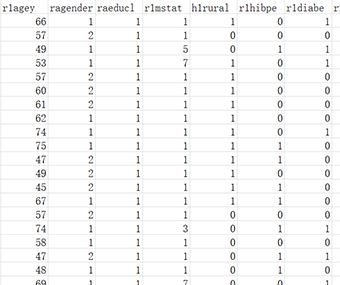

2、数据变量名必须为英文或阿拉伯数字
3、解释变量（Explanatory variable）可以输入多列，如1,2,3...，其中中间以英文状态下的逗号或冒号分隔。
示例如下：

如果需要测试模型的预测效果，则会输出相应预测方法的预测AUC数值及ROC曲线。
示例如下：

| Logistic回归 | 一、数据格式 | ||
|  | |||
|
|||
| 注：
2、数据变量名必须为英文或阿拉伯数字 3、解释变量（Explanatory variable）可以输入多列，如1,2,3...，其中中间以英文状态下的逗号或冒号分隔。
|
|||
| 二、输出结果展示 | |||
| 输出结果包括偏回归系数、标准差、标准误、t值、P值、OR值及其可信区间。 示例如下： 如果需要测试模型的预测效果，则会输出相应预测方法的预测AUC数值及ROC曲线。 示例如下： |
|||